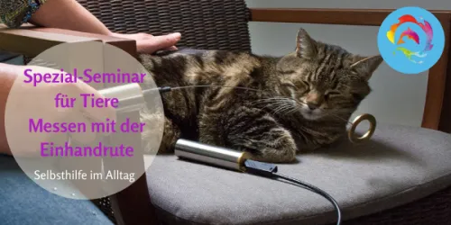

Selbsthilfe im Alltag Tiere, Messen mit Tensor Einhandrute
Produktprofil · Marktplatz-Daten 2026-10-09 · Verkaufsseiten-Recherche 2026-10-09 · Kategorien: Animals & Pets
- Selbsthilfe im Alltag Tiere, Messen mit Tensor Einhandrute ist ein/e Mitgliederbereich & Videokurs in Animals & Pets, vertrieben über den Digistore24-Marktplatz von Anbieter Andrea1A, gelistet seit 2020-06-11.
- Listenpreis $183.30; Digistore24 meldet — Checkout-Konversion, — Stornierungsquote und 25 % Affiliate-Provision.
- Verdienst pro Verkauf (Affiliate): $45.83 (Anbieter-seitige Statistik, keine Prognose).
Interesse an Selbsthilfe im Alltag Tiere, Messen mit Tensor Einhandrute? Aktueller Preis, Boni und Garantiebedingungen finden Sie auf der offiziellen Seite des Anbieters:
Offizielle Verkaufsseite ansehen
Affiliate-Link (Werbung) — wir verdienen ggf. eine Provision, ohne Mehrkosten für Sie.

Marktplatz-Daten
| Produkttyp | Mitgliederbereich & Videokurs |
|---|---|
| Preis | $183.30 (Single payment) |
| Affiliate-Provision | 25 % |
| Garantie/Rückgabe | Laut Verkaufsseite des Anbieters — vor dem Kauf auf der offiziellen Seite prüfen |
| Anbieter | Andrea1A (gelistet seit 2020-06-11) |
| Marktplatz-Statistiken* | Checkout-Konversion — · Stornoquote — · Verdienst/Verkauf $45.83 |
* Anbieter-seitige Statistiken von Digistore24; sie hängen von der Traffic-Qualität ab und sind keine Prognose.
Marktplatz-Beschreibung des Anbieters
Selbsthilfe im Alltag für dein Tier Messen mit der Einhandrute / TensorEin sehr einfacher aber unheimlich effektiver Weg für die Selbsthilfe im Alltag! Wenn du unabhängig und selbstbestimmt herausfinden möchtest, was für dein Tier gut ist, ist dieses Online-Seminar genau das richtige für dich! Jedes Tier und jede Pflanze, sprich jedes Lebewesen, hat eine eigene energetische Schwingungen. Diese Sch…
Von der Verkaufsseite des Anbieters
Seitentitel: Messen mit der Einhandrute Online
Meta-Beschreibung: Messen mit der Einhandrute - Selbsthilfe im Alltag für Tiere. Für Futter, Bachblüten, Nahrungsergänzungsmittel, Schlafplatz, Verträglichkeit mit anderen Tieren usw.
Hauptüberschrift
Selbsthilfe im AlLtag für dein Tier!
Abschnitts-Überschriften
- Mit der Einhandrute kannst du schnell und selbstbestimmt feststellen:
- Du möchtest schnell reagieren können, wenn du ein Problem mit deinem Tier hast und dir selbst helfen können?
- Diese Videos und Übungen warten auf dich:
- Das sagen die Teilnehmer über das Einhandruten Seminar für Tiere.
- Das Seminarprogramm in der Tierakademie 8 Module
- Deine Boni
- In Harmonie für ein gesundes Tier ❤
Einstiegstext
Ich kann dieses Seminar bei Andrea nur wärmstens empfehlen. Wer den Umgang mit der Einhandrute korrekt erlernt, hat nicht nur bei der Tierkommunikation, sondern auch sonst im ganz normalen alltäglichem Leben unendliche und interessante Möglichkeiten, sich das Leben leichter zu machen. Mit den Körblerzeichen können zusätzlich beim Tier Ungleichgewichte im Energiesystem ausgeglichen und harmonisiert werden. Dieses zu erlernen ist eine super Gelegenheit !
Liebe Andrea, es war wieder ein tolles Seminar mit Dir. Ich habe wieder viel Neues dazugelernt und bin einen Schritt weiter mein wahres ICH zu entfesseln. Meine Hunde werden davon profitieren, da ich die Einhandrute vielseitig einsetzten kann für Bachblüten, Futter und Nahrungsergänzungsmittel. Da ich als Hundetrainer arbeite, werden ich die Seminarinhalte auch vielseitig beim Training oder Beratung / Mentalcoach Naturheilkunde für Hunde integrieren.
Mir haben die Videos besonders gut gefallen und auch die Themen dazu. Ich höre sehr gerne deine Stimme und finde alles sehr ausführlich erklärt. Das Skript ist mega toll. So kann man sich alles ausdrucken und davor setzen. Hat mir alles sehr gut gefallen und ich werde dich weiterempfehlen.
Ich habe den Kurs „Messen mit der Einhandrute“ mit Freude und interessiert durchgearbeitet und alle Videos (mehrfach) angeschaut. Es ist ein ganz toller Kurs und die Rute von dir ist wirklich toll! Ich habe sie regelmäßig im Einsatz und bin ganz glücklich. LG Beate
Fragen, die die Verkaufsseite beantwortet
- Für wen ist dieser Online Kurs geeignet?
Recherche-Methode: rohes HTML · 1008 Wörter · Qualität: rich · recherchiert am 2026-10-09. Vollständige Recherche-Datei (MD) ↗
Wie Produkte dieser Art geliefert werden
Allgemeiner Hinweis zu diesem Produkttyp (keine anbieterspezifische Anleitung): Videokurse laufen über einen Mitgliederbereich: nach dem Checkout erhalten Sie Zugangsdaten per E-Mail und können die Lektionen in Ihrem eigenen Tempo streamen. Für die genaue Anwendung von Selbsthilfe im Alltag Tiere, Messen mit Tensor Einhandrute sind die offizielle Verkaufsseite und die enthaltenen Materialien maßgeblich.
Gut zu wissen
- Keine Garantie-Formulierung in unserer Recherche gefunden — bestätigen Sie das Rückgabefenster auf der offiziellen Seite, bevor Sie kaufen.
Häufige Fragen zu Selbsthilfe im Alltag Tiere, Messen mit Tensor Einhandrute
Was ist Selbsthilfe im Alltag Tiere, Messen mit Tensor Einhandrute?
Selbsthilfe im Alltag Tiere, Messen mit Tensor Einhandrute ist ein Angebot des Typs „Mitgliederbereich & Videokurs" im Digistore24-Marktplatz, Anbieter: Andrea1A, gelistet seit 2020-06-11. Eingepflegt unter Animals & Pets. Digistore24 wickelt Checkout, Lieferung und Rückgaben ab.
Wie viel kostet Selbsthilfe im Alltag Tiere, Messen mit Tensor Einhandrute?
Der Digistore24-Marktplatz listet es für $183.30 (single payment). Preise legt der Anbieter fest und können sich ändern — die offizielle Verkaufsseite zeigt den aktuellen Preis.
Gibt es eine Geld-zurück-Garantie für Selbsthilfe im Alltag Tiere, Messen mit Tensor Einhandrute?
Unsere Verkaufsseiten-Recherche hat keine explizite Garantie-Formulierung gefunden. Viele Digistore24-Produkte bieten 60 Tage Geld-zurück, aber das legt jeder Anbieter selbst fest — bestätigen Sie es auf der offiziellen Verkaufsseite, bevor Sie kaufen.
Ist Selbsthilfe im Alltag Tiere, Messen mit Tensor Einhandrute seriös?
Wir bewerten keine Seriosität — wir veröffentlichen überprüfbare Zahlen: Anbieter Andrea1A (gelistet seit 2020-06-11), Checkout-Konversion —, Stornoquote —, Affiliate-Verdienst/Verkauf $45.83 (alles Anbieter-seitige Marktplatz-Statistiken). Lesen Sie unsere Recherche-Standards und entscheiden Sie anhand der Zahlen.
Wo kann ich Selbsthilfe im Alltag Tiere, Messen mit Tensor Einhandrute sicher kaufen?
Nur über die offizielle Verkaufsseite, die auf dieser Seite verlinkt ist (Checkout und Rückgaben laufen über Digistore24). Prüfen Sie dort Preis und Garantie vor der Bestellung. Der Link ist ein Affiliate-Link — der Kauf unterstützt diese Website ohne Mehrkosten für Sie.
Ähnliche Angebote in Tiere & Haustiere

BAUCH, BEINE, PO – das Trainingsprogramm für dein Freizeitpferd In nur 8 Wochen Muskulatur, Balance & Tragkraft aufbauen, für ein gesundes, motiviertes Pfer

Zertifizierter Katzenverhaltensberater / Katzencoach – Fernlehrgang der aCATemy® Bewirb eine professionelle Online-Ausbildung für alle, die Katzenverhalten fund

Diese Schulung ist hilft Haltern von Herdenschutzhunde in Familienhand, ein glückliches und harmonischen Zusammenleben zu ermöglichen. Empfehlen Sie das einziga

So wird aus Lesen echte Hilfe vor Ort! Im Guide erfahren Sie: Warum Tierschutz heute wichtiger ist den je Was wirklich im Tierschutzalltag so passiert Die 5 grö
Weitere Angebote von Andrea1A

Schritt für Schritt die nonverbale Kommunikation mit Tieren erlernen.Online Kurs - Tierakademie Es sind KEINE Vorkenntnisse notwendig. Du kannst JEDERZEIT einst

Schlüpfe stellvertretend in die Rolle deines Tieres oder in das bestehende Problem. Nutze stellvertretend Gegenstände wie Steine oder Figuren und erfühle den ri

Aufbaukurs 1 Tierkommunikation - Erweitere dein Wissen Du möchtest noch mehr über die Tierkommunikation erfahren und dein Wissen erweitern und vertiefen? Du möc
ONLINE: Dein Tier geht auf seine letzte Reise. Sterbebegleitung bei deinem Tier Was ist jetzt für den Menschen aber vor allem auch für das Tier wichtig! Der Onl
Ähnliche Preislage in Tiere & Haustiere

Futterklarheit – Wissen statt Werbung. Klarheit statt Verwirrung. Hundeernährung ist voller widersprüchlicher Empfehlungen, Trends und Werbeversprechen. BARF od

Allergien beim Hund verstehen – statt nur Symptome zu betrachten Juckreiz, Hautprobleme, wiederkehrende Ohrenentzündungen oder Verdauungsbeschwerden führen viel

BARF verstehen statt einfach Prozentmodelle nachmachen Viele Hundehalter möchten ihren Hund frisch und roh ernähren, stoßen beim BARFen aber schnell auf widersp

Frische, ausgewogene Mahlzeiten für deinen Hund – einfach selbst zubereiten Viele Hundehalter würden ihrem Hund gerne frische, selbstgekochte Mahlzeiten anbiete
Ähnliche Suchanfragen
Wo Sie es sich ansehen können
Wo Sie es sich ansehen können
Aktuelle Preise, Garantie und Boni finden Sie auf der offiziellen Verkaufsseite:
Offizielle Verkaufsseite ansehen
Das ist ein Affiliate-Link (Werbung) — kaufen Sie darüber, verdienen wir ggf. eine Provision, ohne Mehrkosten für Sie.
Quellen & weiterführende Informationen
- Offizielle Verkaufsseite (aktueller Preis, Garantie, Boni): tierakademie.andrea-schaedel.de/lp/messen-mit-der-einhandrut (Affiliate-Link)
- Öffentliche Digistore24-Produktseite: digistore24.com/product/331144
- Vollständige Recherche-Datei (Markdown, versioniert): content/products/37407-selbsthilfe-im-alltag-tiere-messen-mit-tensor-einhandrute.md
- Marktplatz-Kategorie: Tiere & Haustiere
Wie wir Produkte wie Selbsthilfe im Alltag Tiere, Messen mit Tensor Einhandrute bewerten
Sechs Prüfungen, ausschließlich mit offiziellen Marktplatz-Zahlen. Die vollständige Bewertungsmethode lesen · unsere Recherche-Standards & Kennzeichnung.
function interactionBlock(p) { const q = encodeURIComponent(p.label); const mail = encodeURIComponent("Korrektur: " + p.label); return `Fragen oder eigene Erfahrungen mit ${esc(p.label)}?
Praxis-Tests veröffentlichen wir erst, nachdem wir ein Produkt selbst gekauft haben — aber Ihre Erfahrung hilft anderen Lesern: Diskussion zu ${esc(p.label)} auf GitHub starten/verfolgen. Falsche Zahl gefunden? Korrektur melden — jede Seite zeigt ihre Datenstände, Korrekturen gelten für die ganze Website.
`; }